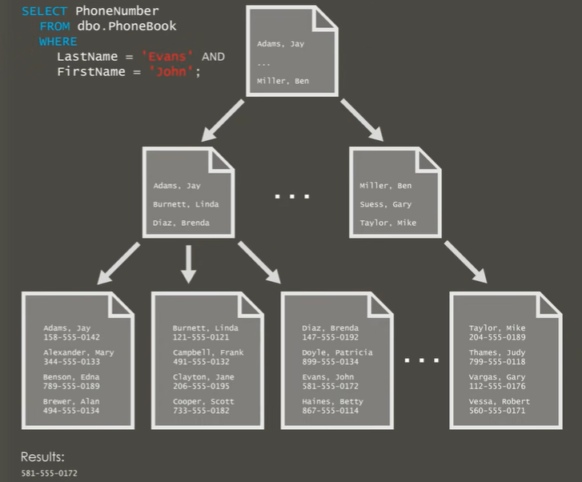

데이터베이스 인덱스
@ 참고 자료)
1. 인덱스를 사용하는 이유¶
- 조건에 맞는 튜플(들)을 빠르게 조회하기 위한 자료구조
- 정렬, 그룹핑을 빠르게 하기위한 자료구조
2. 인덱스 거는 문법¶
1. CREATE INDEX - 이미 존재하는 테이블에 인덱스 추가¶
-
player | id | name | team_id | backnumber | | ------ | ----- | ------- | ---------- | | 1 | messi | 2 | 10 | | 2 | sonny | 105 | 7 | | 3 | ronaldo | null | null |
-
player테이블의name이라는 attribute 에plyer_name_idx라는 인덱스 추가 -
player 테이블의 team_id 와 backnumber 라는 attribute set 에 team_id_back_number_idx 인덱스 추가
- 한 팀에는 등번호가 같은 선수가 없기 때문에 UNIQUE INDEX 를 걸 수 있다.
2. CREATE TABLE ... INDEX - 테이블을 생성하면서 인덱스 추가¶
CREATE TABLE player(
id INT PRIMARY KEY, ## 자동으로 인덱스 생성
name VARCHAR(20) NOT NULL,
team_id INT,
backnumber INT,
INDEX player_name_idx (name),
UNIQUE INDEX team_id_backnumber_idx (team_id, backnumber) ## 복합 인덱스
);
3. SHOW INDEX FROM - 테이블의 인덱스 목록 조회¶

4. B-tree 기반의 인덱스가 동작하는 방식¶
5. EXPLAIN - SQL 이 실행할 INDEX 확인¶
6. USE INDEX, FORCE INDEX - SQL 이 실행할 INDEX 명시¶
SELECT * FROM plyaer USE INDEX (player_name_idx) WHERE id = 1; ## 가급적 INDEX 사용
SELECT * FROM plyaer FORCE INDEX (player_name_idx); ## 더 강하게 사용
7. 인덱스 주의사항¶
- 인덱스는 CUD 속도를 낮춘다.
- 추가적인 저장공간을 필요로 한다.
- 인덱스가 의도한 대로 동작하는지 쿼리를 확인할 필요가 있다.
- 인덱스를 적용할 때는 cardinarlity 를 고려하자.
- 데이터가 몇 백만건 이상 있는 테이블에 인덱스를 추가할 때는 시간이 많이 소요된다.
- 대량의 데이터를 조회하는 쿼리 같은 경우 인덱스가 아니라 Full Table Scan 이 빠를 수 있다.
- 참고 - 조시형 - [친절한 SQL 튜닝]
8. Covering Index¶
- select 절의 모든 projection 필드를 인덱스로 검색 할 수 있도록 하는 것
9. Clustered Index 와 Non-Clustered Index¶
@ 참고 자료) - # Clustered vs. Nonclustered Index Structures in SQL Server
-
Clustered-Index
- 기본적으로 PK에 걸림
- 테이블당 하나만 가질 수 있음
- 인덱스의 Leaf Node 자체가 데이터임
- 성능이 더 빠르다. 
-
Non-clustered Index
- 기본적으로 Unique Constraint 와 추가되는 Index 에 사용됨
- 한 테이블에 여러개 생성 가능
- Leaf Node 에는 실제 데이터의 주소가 저장되어 있음

{kind=link}
10. B-Tree 인덱스 vs Hash Table 인덱스¶
- B-Tree 인덱스는 범위 검색에서도 인덱스를 사용할 수 있다.
-
B-Tree 인덱스는 복합 인덱스 적용 시 일부 컬럼 (앞에서 부터)에 대한 조건절 처리에도 인덱스를 사용할 수 있다.
-
반면 헤시 테이블 인덱스는 단건 조회에 대해서
O(1)타임에 조회가 가능하다.
Last update:
December 23, 2022
Created: December 20, 2022
Created: December 20, 2022